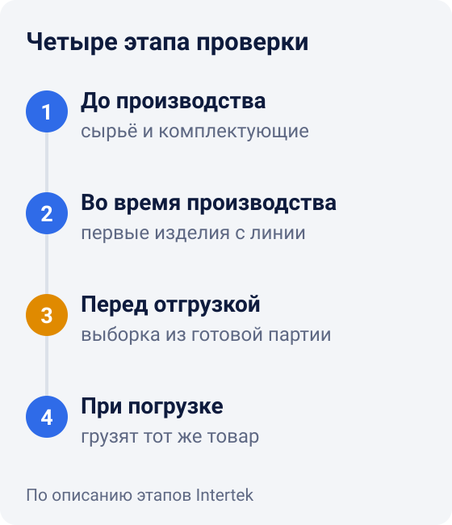
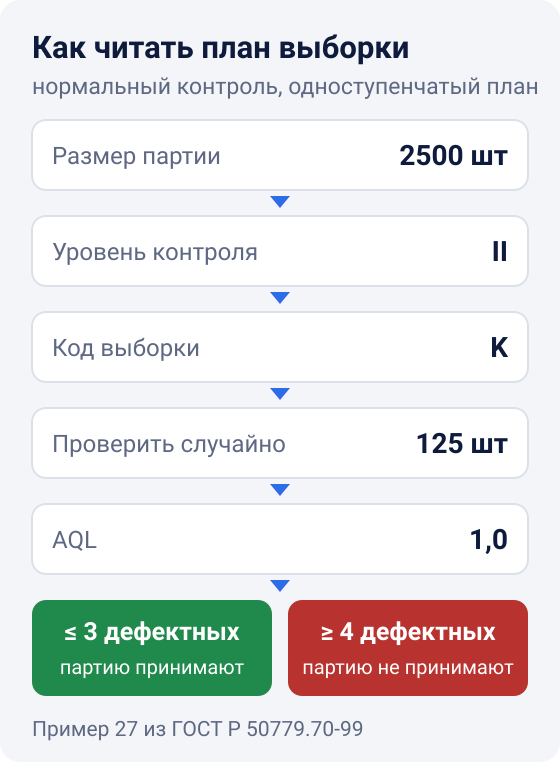

Проверка качества товара в Китае: как устроена инспекция перед отгрузкой
Брак проще всего исправить, пока партия ещё на фабрике. Поэтому главную проверку делают до отгрузки: когда товар готов и упакован, инспектор отбирает выборку и сверяет её с требованиями контракта4. Сколько штук проверить и сколько дефектов допустимо, задаёт план выборочного контроля по стандарту ISO 2859-1.
Ниже разберём, на каких этапах проверяют партию, как читать план выборки на примере, какие дефекты не допускаются совсем и что делать, если партия не прошла.
Когда проверять партию: четыре этапа
Проверку можно провести на четырёх этапах - так их описывает, например, международная инспекционная компания Intertek4:
- До производства. Инспектор выборочно проверяет сырьё и комплектующие, из которых будут делать товар4.
- Во время производства. Как только с линии сходят первые изделия, их проверяют на дефекты и отклонения и предлагают, как это исправить4. Для бытовой техники Intertek обычно проводит такую проверку, когда готово 10-15% партии5.
- Перед отгрузкой. Товар готов, упакован и ждёт отправки. Инспектор берёт случайную выборку и проверяет количество, качество изготовления, работу изделия, цвет, размеры и упаковку4.
- При погрузке. Инспектор следит, чтобы в контейнер погрузили тот же товар, который прошёл проверку4.

Заказывать все четыре проверки не обязательно. Intertek рекомендует проверку во время производства для крупных партий, непрерывного производства и жёстких сроков отгрузки. Ещё её стоит провести, если проверка до производства нашла проблемы5.
Проверить партию перед отгрузкой может и FBL Group: мы работаем в Китае и проверяем товар прямо на фабрике. Чтобы обсудить вашу партию, оставьте заявку.
Почему проверяют выборку, а не каждую штуку
Проверить каждую единицу в партии из нескольких тысяч штук долго и дорого. Поэтому инспекторы берут выборку и проверяют её по правилам выборочного контроля. Для штучного товара их задаёт серия стандартов ISO 2859. Действующая редакция первой части, ISO 2859-1:2026, вышла в январе 2026 года и заменила редакцию 1999 года1. В России принят ГОСТ Р ИСО 2859-1-2007, идентичный ISO 2859-1:19992.
Главный параметр плана - AQL, приемлемый уровень качества. Это наихудший средний уровень дефектов в производстве, который при выборочном контроле серии партий ещё считают удовлетворительным2. AQL выражают в процентах дефектных изделий или в числе дефектов на 100 изделий2. Например, AQL 1,0 по дефектным изделиям означает 1%.
У AQL есть две важные оговорки:
- AQL не разрешает поставлять брак. Стандарт прямо предупреждает: назначение AQL не даёт поставщику права намеренно поставлять дефектные изделия2.
- AQL нужно согласовать заранее. Значение AQL записывают в контракт, или его назначает сторона, которая отвечает за приёмку2. Если AQL не записан, у вас с фабрикой не будет согласованного критерия приёмки.
Как прочитать план выборки: пример
Для плана нужны три вещи: размер партии, уровень контроля и AQL. Уровней общего контроля три: I, II и III. Если уровень не оговорён, применяют уровень II2.
Возьмём разобранный пример из пояснительного ГОСТ Р 50779.70-99. Допустим, в партии 2500 штук, уровень контроля II, AQL 1,03.
- Код выборки. По таблице кодов партии от 1201 до 3200 штук при уровне II соответствует код K2.
- Сколько штук проверить. Коду K соответствует выборка 125 штук2. Их отбирают из партии случайно.
- Приёмочное и браковочное число. Для AQL 1,0 при коде K приёмочное число Ac равно 3, браковочное Re - 43.
- Решение. Нашли в выборке 3 дефектных изделия или меньше - партию принимают. Нашли 4 или больше - партию не принимают.

Выборка растёт медленнее партии. В том же стандарте разобран пример с партией 5000 штук, уровнем II и AQL 0,65: код L, выборка 200 штук, партию принимают, если дефектных изделий не больше трёх3.
Таблицы стандарта в статье мы не перепечатываем. Для своей партии берите таблицы стандарта, который указан в контракте. Примеры выше посчитаны по таблицам прежних редакций (ISO 2859-1:1999 и более ранней). Если в контракте указана редакция 2026 года, сверяйтесь с ней.
Какие дефекты не допускаются совсем
Не все дефекты одинаково важны, поэтому их делят на классы и для каждого класса назначают свой AQL3. В стандарте важнейший класс - критические несоответствия. Это дефекты, связанные с безопасностью: из-за них изделием опасно пользоваться3. Остальные делят на значительные и малозначительные3. Инспекционные компании используют английские названия: например, у Intertek это critical, major и minor5.
Для критических дефектов допустимой доли нет3. Стандарт допускает проверку каждой единицы на критические несоответствия. Партию можно отклонить, если в выборке найден хотя бы один такой дефект2.
Какие дефекты к какому классу относить, стандарт за вас не решит. Классы зависят от конкретного товара, поэтому общими стандартами их не установить3. Значит, список дефектов по классам нужно составить до проверки и согласовать с фабрикой. В контракте заодно закрепите право покупателя проверить партию до отгрузки.
Образец и чек-лист: что подготовить до проверки
Инспектор сравнивает партию с тем, что вы ему дали. Если требования не записаны, проверять будет не с чем. Перед проверкой подготовьте:
- Утверждённый образец. Изделие, которое вы приняли до запуска партии. Сохраните его у себя или на фабрике с вашей пометкой, а фото и размеры приложите к заданию инспектору.
- Требования по пунктам. Те же, что проверяет инспектор: количество, качество изготовления, работа изделия, цвет, размеры, упаковка4. Для каждого пункта запишите допуск: например, размер «±1 см», цвет «по образцу».
- Список дефектов по классам. Что считать критическим, значительным и малозначительным для вашего товара.
- План выборки. Уровень контроля и AQL для каждого класса - те, что записаны в контракте.
- Маркировку и упаковку. Этикетки, штрихкоды, вложения, коробку и вес. Ошибки здесь тоже обходятся дорого. Их проще исправить на фабрике, чем после доставки.
Партия не прошла проверку: что делать
Если партия не прошла проверку, это не значит, что товар пойдёт в утиль. В зависимости от ситуации партию могут отправить на сплошной контроль: проверяют каждую штуку, дефектные исправляют или заменяют. Партию также можно продать со скидкой или использовать иначе3.
На практике порядок обычно такой:
- Получить отчёт с фото дефектов и посмотреть, по каким классам дефектов партия не уложилась в норму.
- Договориться с фабрикой: переборка всей партии, ремонт, замена дефектных изделий.
- Провести повторную проверку после переборки. Инспектор должен знать, что партию предъявили повторно, и особенно внимательно проверить дефекты, из-за которых её отклонили3.
- Отгружать только после того, как партия прошла проверку.
Поэтому проверку лучше назначать с запасом по времени до отгрузки. Если партия не пройдёт, останется время на переборку и повторную проверку.
Как проверяет партию FBL Group
Мы выборочно проверяем партию на фабрике до отгрузки. По итогам вы получаете фото, видео и письменный отчёт.
Если товар едет на наш склад в Китае, его ещё раз пересчитывают и проверяют при приёмке, а если нужно, упаковывают и маркируют. Подробнее это описано на странице фулфилмента. Почему партия может задержаться ещё до отправки и как заложить запас по срокам, мы разбирали в статье о задержках груза из Китая. Кто мы и где работаем, рассказано на странице о компании.
Короткий чек-лист
- Утвердить образец до запуска производства.
- Записать в контракт уровень контроля и AQL для каждого класса дефектов.
- Составить список дефектов: критические, значительные, малозначительные.
- Для больших заказов добавить проверку во время производства.
- Назначить проверку перед отгрузкой, когда партия готова и упакована, с запасом времени на переборку.
- Проверить маркировку и упаковку вместе с товаром.
- Не отгружать партию, которая не прошла проверку, до повторной проверки.
Чтобы проверить вашу партию до отгрузки, оставьте заявку.
*Статья носит информационный характер и не является юридической консультацией. Требования к приёмке вашей партии определяет ваш контракт с поставщиком.*
Источники
- ISO. ISO 2859-1:2026 Sampling procedures for inspection by attributes — Part 1 — страница стандарта, 3-я редакция, январь 2026 (на английском).
- Росстандарт, текст на meganorm.ru. ГОСТ Р ИСО 2859-1-2007. Статистические методы. Процедуры выборочного контроля по альтернативному признаку. Часть 1 — идентичен ISO 2859-1:1999.
- Текст на files.stroyinf.ru. ГОСТ Р 50779.70-99 (ИСО 2859-0-95). Процедуры выборочного контроля по альтернативному признаку. Часть 0. Введение — разобранные примеры 10 и 27.
- Intertek. Consumer Goods Inspections — этапы инспекции (на английском).
- Intertek. Product Quality Inspections — инспекции бытовой техники (на английском).
Ссылки проверены 2 ноября 2026. Статья — общие рекомендации, а не юридическая консультация.